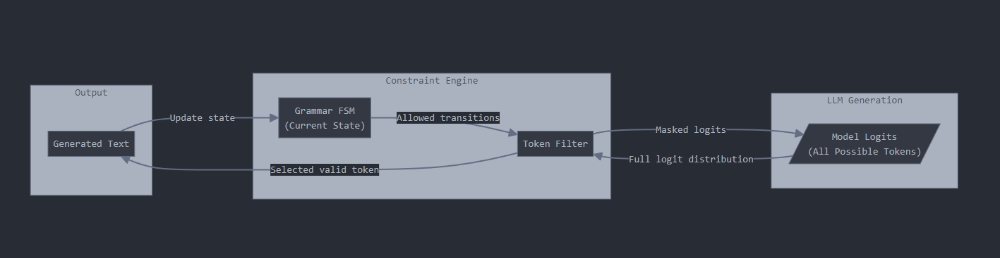

Ever had that moment when your shiny new AI system confidently generates the most beautiful, grammatically perfect, and utterly broken JSON you’ve ever seen? You know, the kind that makes your production system throw its hands up in digital despair? Welcome to the club! These language models are like that brilliant friend who can explain quantum physics but somehow can’t remember to close their parentheses.
And that’s not just a minor inconvenience – your business runs on structured text. Not the forgiving chatter of Slack, but rigid formats that tolerate zero mistakes. JSON, XML, SQL, CSV – these aren’t just data formats, they’re diplomatic protocols between sovereign digital nations. One misplaced comma, and everything stops. Consider what’s at stake:
- Payment Processing: Every transaction triggers dozens of precisely formatted messages coordinating fraud checks, inventory, and settlement
- Supply Chain: Your entire logistics network depends on perfectly structured data exchange
- Financial Systems: Where even minor format errors can trigger compliance alerts and halt operations
As a Chief Data Officer, I’ve watched the same crisis unfold countless times: a missing quote freezes orders, a rogue comma corrupts exports, a malformed XML turns a routine deployment into an all-hands crisis. These are so common that companies like Monte Carlo and Accel Data built billion-dollar empires just ensuring data stays clean and correct. In this world, format errors aren’t bugs – they’re declarations of war.
Programming note: Welcome new subscribers! This is a special deep dive into a critical gap in the GenAI stack that I’ve been researching extensively. If you have GenAI anywhere near your product, you need to know this: companies are quietly wasting up to 70% of their AI spend. Bookmark this longer-than-usual post for a thorough read. Regular bite-sized programming returns this weekend. Got papers or topics you want covered? Drop me a line at ai.afterhours.shwetank@gmail.com.
The “It’s Just JSON†Fallacy
At this point, I can hear the seasoned engineers in the room saying, “Hold on - this is a solved problem, right? We’ll just validate the output after generation. It’s just JSON/XML/SQL, after all!†I call this the “It’s Just JSON†fallacy, and I’ve watched it drain millions from engineering budgets. The reasoning seems sound at first: we have parsers, we have schema validators, we have retry logic. But here’s what actually happens in production:
- Validation after generation is like spell-checking a letter after you’ve mailed it - you’ve already paid for the postage
- Every validation failure triggers another API call to regenerate the content
- Each retry not only costs money but adds latency to your customer-facing systems impacting important business metrics like conversion
Even worse: some responses can be syntactically perfect but semantically nonsensical - they pass your validators but corrupt your data. For example, a well-formed JSON packet with {"age": -2147483648} might sail through basic JSON schema validation (it’s a valid integer!) while representing an impossible human age that could skew your analytics pipeline.
Here’s what this looks like at scale: One large marketplace built what seemed like a bulletproof system around AI-generated structured data. They had validation layers, retry logic, semantic checks, and fallback systems. Six months in, their cloud bill had tripled and their API costs had quintupled. Their engineers were spending more time fine-tuning validation rules than building new features. They weren’t fixing the problem - they were just getting better at handling failures.
This pattern is so common in enterprise AI that cloud providers have started offering specific tooling around retry logic and validation pipelines. But adding more safety nets doesn’t solve the fundamental problem - it just makes failing more expensive. Welcome to the world of Agentic workflows!
Teaching AI to Mind Its Manners: Constrained Generation
So how do we fix this? The answer is constrained generation, and it’s more elegant than you might expect. Instead of the current “generate and pray†approach, we’re going to put our AI through grammar school. Think of it like teaching an overenthusiastic five-year-old to write - you wouldn’t just hand them a blank piece of paper and correct their mistakes afterward. Instead, you’d give them a template with clear rules.
Let’s look at a concrete example with generating a simple JSON: {"name": "Alice"}. At each step:
The LLM predicts probabilities for every possible next token:
- “name†(30% likely)
- “{†(20% likely)
- “Alice†(15% likely)
- “}†(10% likely)
- And thousands more possibilities…
A grammar filter examines these predictions and removes any tokens that would break our formatting rules. After typing
{"name, only a closing quotation mark is valid - everything else gets zeroed out.The system picks from the remaining valid tokens and updates its state. It’s like having autocorrect, but instead of fixing mistakes after you make them, it prevents them entirely.
|  |
|---|
| Constrained token generation for structured text |
For the visual learners among us, here’s a flowchart of how these pieces fit together. A structured output is enforced by combining two key components: a state machine that tracks our position in the structure, and a filter that controls what the LLM can generate next. The state machine knows if we’re inside a JSON object, array, or string, while the filter ensures only valid tokens can be selected at each step. For example, after an opening brace ‘{’, the filter only allows string literals that could be valid property names.
The “Fast Lane†Trick
Now here’s where it gets really interesting: once we know the valid patterns, we can optimize them. Think about it - why should an AI model waste time (and your money) generating tokens that are completely predictable? Using our {"name": "Alice"} example, let’s look at which parts actually need creative thinking versus which parts are just following rules:
{ "name" : "Alice" }
↑ ↑ ↑ ↑ ↑
1 2 3 4 5
1: Must start with {
2: Need to generate the key name
3: Must be ": " (guaranteed sequence)
4: Need to generate the value
5: Must end with }If you look carefully at position 3 - after you’ve written {"name", what comes next isn’t a creative decision. It has to be a quote mark followed by a colon and a space. There’s no other possibility. So why waste time (and money) having the AI model pretend to think about each of these tokens? Instead, we can skip straight past the ": " sequence.
This is like having a GPS that doesn’t just keep you on the right road, but also tells you where you can safely put your foot down. In our example:
- Have to think: What should the key name be? → “name”
- Fast lane: The
": "sequence is automatic - Have to think: What should the value be? → “Alice”
- Fast lane: The closing
}is automatic
By identifying these guaranteed sequences, we can skip generating probabilities for tokens that are 100% predetermined. In a simple example like this, we might save just a few tokens, but in complex JSON structures with nested objects and arrays, these savings add up quickly.
Zero, Not “Fewer”: Making Structural LLM Errors Impossible
Let’s examine what happens when an LLM encounters decision points while generating structured data. At the value position in our {"name": "Alice"} example (after {"name":), here’s what the model initially predicts:
"Alice" : 0.15
"Bob" : 0.12
42 : 0.08
true : 0.05
{ : 0.04
[ : 0.03
... (other tokens)Without constraints, this leads to common JSON errors like unquoted numbers ({"name": 42}), incomplete objects ({"name": {"age"}), or unquoted text ({"name": Alice}).
Constrained generation on the other hand applies token masking, transforming those probabilities to:
" : 1.0 (only valid option to start a string)
42 : 0.0 (masked - would create invalid JSON)
{ : 0.0 (masked - would create invalid JSON)
... (all other tokens masked)This isn’t making the model smarter - it’s enforcing structural guarantees through probability masking. The impact? When generating thousands of records, even a 99.9% success rate means consistent failures at scale. Constrained generation doesn’t improve those odds - it makes structural errors mathematically impossible.
The Punctuation Tax: A CFO’s Nightmare
Let me translate the impact of all of this into plain CFO-speak:
- Zero invalid outputs. Not “fewer.†Zero. It is mathematically impossible to generate invalid output
- 40-60% lower API costs - no more retries
- 30-50% additional savings by skipping predictable tokens
- No more “ai-output-broken†emergency Slack channels
Let’s be blunt: you’re paying AI model prices for punctuation marks. Every time your LLM generates a JSON structure, you’re burning tokens on braces and commas. That’s like hiring a McKinsey consultant to type semicolons. Here’s what a typical JSON response looks like:
{
"apiVersion": "v1",
"metadata": {
"timestamp": "2024-10-29T12:00:00Z"
}
}This boilerplate alone is 20-30 tokens of pure syntax. At $0.01 per 1K tokens:
- 100,000 daily API calls
- 25 tokens of boilerplate each
- That’s $9,125 annually just for punctuation
For a company spending $100K monthly on AI calls, up to $60K goes to generating predictable tokens. Most structured data is 50-65% syntax:
- JSON: ~60% structural tokens
- XML: ~65% structural tokens
- SQL: ~50% structural tokens
🔮 Future Impact: This matters even more for autonomous AI workflows. Today, when AI systems chain operations together, each step needs extensive validation and error handling. With constrained generation, we shift from catching errors at runtime to preventing them entirely - like catching type errors in development instead of production. For businesses building autonomous systems, structural reliability isn’t just improved - it’s guaranteed. Your AI agents can’t generate structurally invalid queries or corrupt data structures so long as they can be defined by a grammar because they’re mathematically incapable of breaking those rules.
Putting It All Together: A Path to Predictable AI
I’ve thrown a lot of technical detail and business math at you. But here’s what I really want you to take away: constrained generation isn’t optional anymore. It’s table stakes for any business serious about deploying AI in production.
Think about it this way: We don’t debate whether to use HTTPS anymore. We don’t have meetings about whether to validate user input. We don’t write blog posts weighing the pros and cons of using version control. These are just part of what we call “engineering.†Constrained generation is on the same trajectory – it’s rapidly moving from “interesting technique†to “standard practice.”
Remember those numbers we walked through earlier? Let’s put them in perspective: - You’re either paying a “punctuation tax†of 40-70% on your API calls, or you’re not - Your engineering team is either firefighting format errors, or they’re building features - Your AI systems are either probabilistically reliable, or they’re mathematically guaranteed
This isn’t about optimization anymore – it’s about basic engineering competence. When you’re processing millions of structured outputs, “mostly correct†isn’t a standard, it’s a liability. Every CTO I know who has implemented constrained generation has the same reaction: “I can’t believe we used to do this any other way.”
The pattern in software engineering is always the same: first we make something possible, then we make it reliable, then we make it efficient. We’re watching this play out with AI in real-time. The companies that get ahead of this curve aren’t just going to save money – they’re going to be the ones whose AI initiatives succeed while their competitors are still debugging edge cases.
Getting Started with Constrained Generation
For the engineers in your life (or the engineering-curious), there are several frameworks that make constrained generation accessible - some more nascent than others:
Guidance: Microsoft Research’s powerful framework that focuses on interleaving control flow with generation. It allows you to write pure Python code with LLM-specific extensions, making it feel natural for developers.
Outlines: A lean, efficient library focused purely on structured generation to make AI speak a language that computers will understand.
Formatron: The new performance-focused entrant, with an emphasis on efficient parsing and generation. It implements constraints using the Earley algorithm in Rust, making it both theoretically optimal and practically fast.
These frameworks are very much under active development and evolving fast. I am sure each of them will carve a niche for itself.
In a future post I plan to create a video that will help engineers get set up with a solution quickly. If you’re an engineer (or work with engineers), you’ll want to bookmark these two – it’s going to be the kind of post that saves weeks of trial and error.
Found this valuable? Share it with your friends! Subscribe to ensure you don’t miss it – your future self will thank you when your AI systems are running smoothly at 3 AM instead of generating support tickets.